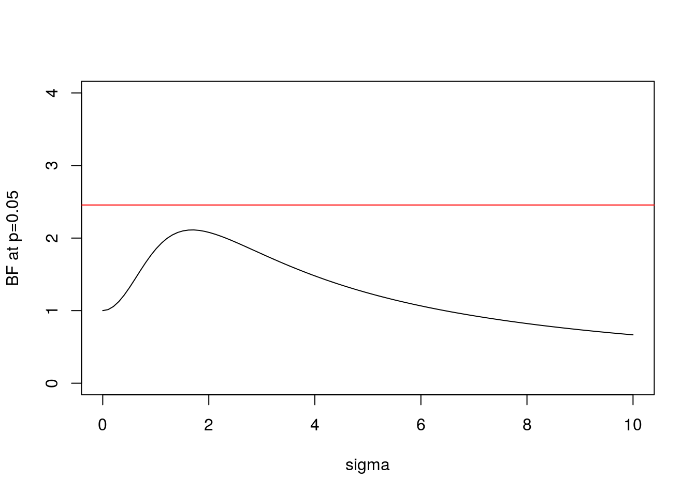

Last updated: 2017-03-06
Code version: c7339fc
You should know what a Bayes Factor is and what a p value is.
Sellke et al (Thomas Sellke 2001) study the following question (paraphrased and shortened here).
Consider the situation in which experimental drugs D1; D2; D3; etc are to be tested. Each test will be thought of as completely independent; we simply have a series of tests so that we can explore the frequentist properties of p values. In each test, the following hypotheses are to be tested: \[H_0 : D_i \text{ has negligible effect}\] versus \[H_1 : D_i \text{ has a non-negligible effect}.\]
Suppose that one of these tests results in a p value \(\approx p\). The question we consider is: How strong is the evidence that the drug in question has a non-negligible effect?
The answer to this question has to depend on the distribution of effects under \(H_1\). However, Sellke et al derive a bound for the Bayes Factor. Specifically they show that, provided \(p<1/e\), the BF in favor of \(H_1\) is not larger than \[1/B(p) = -[e p \log(p)]^{-1}.\] (Note: the inverse comes from the fact that here we consider the BF in favor of \(H_1\), whereas Sellke et al consider the BF in favor of H_0).
Here we illustrate this result using Bayes Theorem to do calculations under a simple scenario.
Let \(\theta_i\) denote the effect of drug \(D_i\). We will translate the null \(H_0\) above to mean \(\theta_i=0\). We will also make an assumption that the effects of the non-null drugs are normally distributed \(N(0,\sigma^2)\), where the value of \(\sigma\) determines how different the typical effect is from 0.
Thus we have: \[H_{0i}: \theta_i = 0\] \[H_{1i}: \theta_i \sim N(0,\sigma^2)\].
In addition we will assume that we have data (e.g. the results of a drug trial) that give us imperfect information about \(\theta\). Specifically we assume \(X_i | \theta_i \sim N(\theta_i,1)\). This implies that: \[X_i | H_{0i} \sim N(0,1)\] \[X_i | H_{1i} \sim N(0,1+\sigma^2)\]
Consequently the Bayes Factor (BF) comparing \(H_1\) vs \(H_0\) can be computed as follows:
BF= function(x,s){dnorm(x,0,sqrt(s^2+1))/dnorm(x,0,1)}Of course the BF depends both on the data \(x\) and the choice of \(\sigma\) (here s in the code).
We can plot this BF for \(x=1.96\) (which is the value for which \(p=0.05\)):
s = seq(0,10,length=100)
plot(s,BF(1.96,s),xlab="sigma",ylab="BF at p=0.05",type="l",ylim=c(0,4))
BFbound=function(p){1/(-exp(1)*p*log(p))}
abline(h=BFbound(0.05),col=2) Here the horizontal line shows the bound on the Bayes Factor computed by Sellke et al.
And here is the same plot for \(x=2.58\) (\(p=0.01\)):
plot(s,BF(2.58,s),xlab="sigma",ylab="BF at p=0.01",type="l",ylim=c(0,10))
abline(h=BFbound(0.01),col=2)Note some key features:
sessionInfo()R version 3.3.2 (2016-10-31)
Platform: x86_64-pc-linux-gnu (64-bit)
Running under: Ubuntu 14.04.5 LTS
locale:
[1] LC_CTYPE=en_US.UTF-8 LC_NUMERIC=C
[3] LC_TIME=en_US.UTF-8 LC_COLLATE=en_US.UTF-8
[5] LC_MONETARY=en_US.UTF-8 LC_MESSAGES=en_US.UTF-8
[7] LC_PAPER=en_US.UTF-8 LC_NAME=C
[9] LC_ADDRESS=C LC_TELEPHONE=C
[11] LC_MEASUREMENT=en_US.UTF-8 LC_IDENTIFICATION=C
attached base packages:
[1] stats graphics grDevices utils datasets methods base
other attached packages:
[1] workflowr_0.4.0 rmarkdown_1.3.9004
loaded via a namespace (and not attached):
[1] backports_1.0.5 magrittr_1.5 rprojroot_1.2 htmltools_0.3.5
[5] tools_3.3.2 yaml_2.1.14 Rcpp_0.12.9 stringi_1.1.2
[9] knitr_1.15.1 git2r_0.18.0 stringr_1.2.0 digest_0.6.12
[13] evaluate_0.10 Thomas Sellke, James O. Berger, M. J. Bayarri. 2001. “Calibration of \(p\) Values for Testing Precise Null Hypothesis.” The American Statistician 55 (1).
This site was created with R Markdown